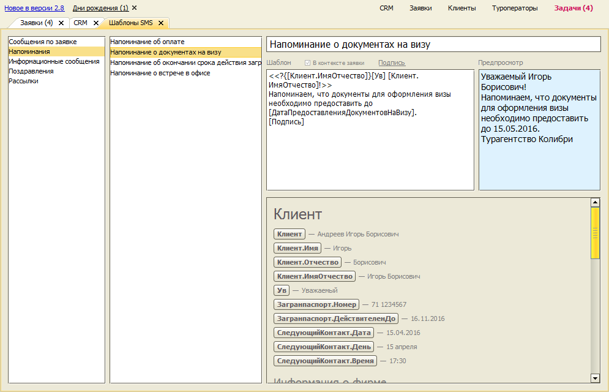
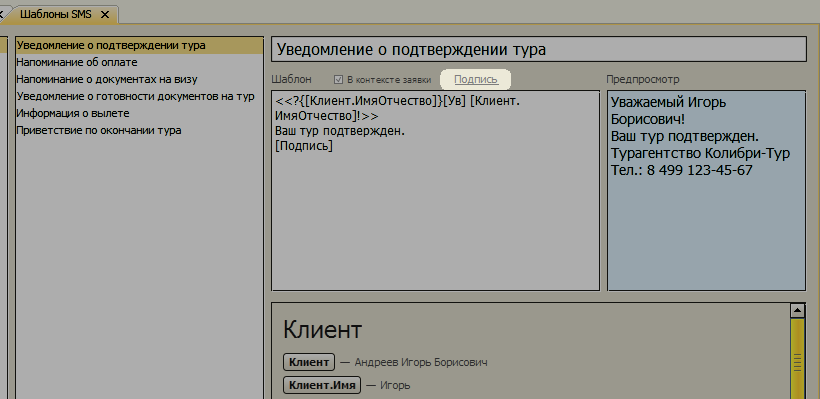
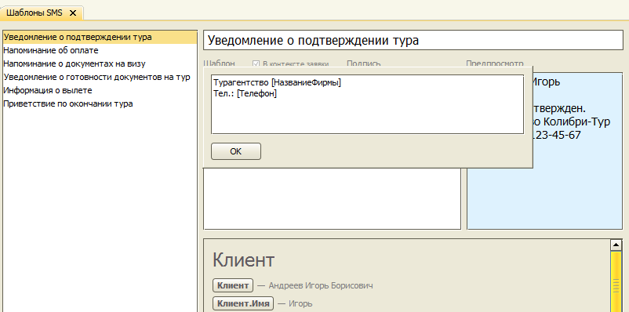
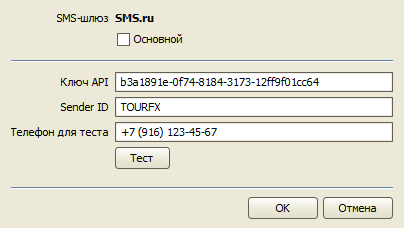
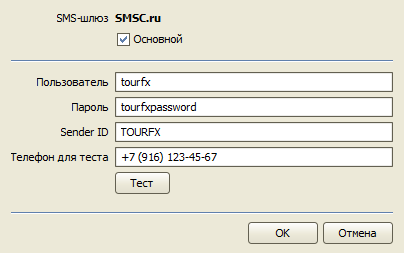
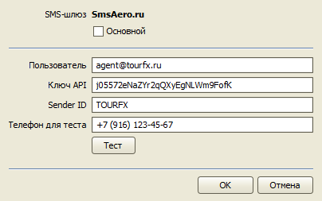
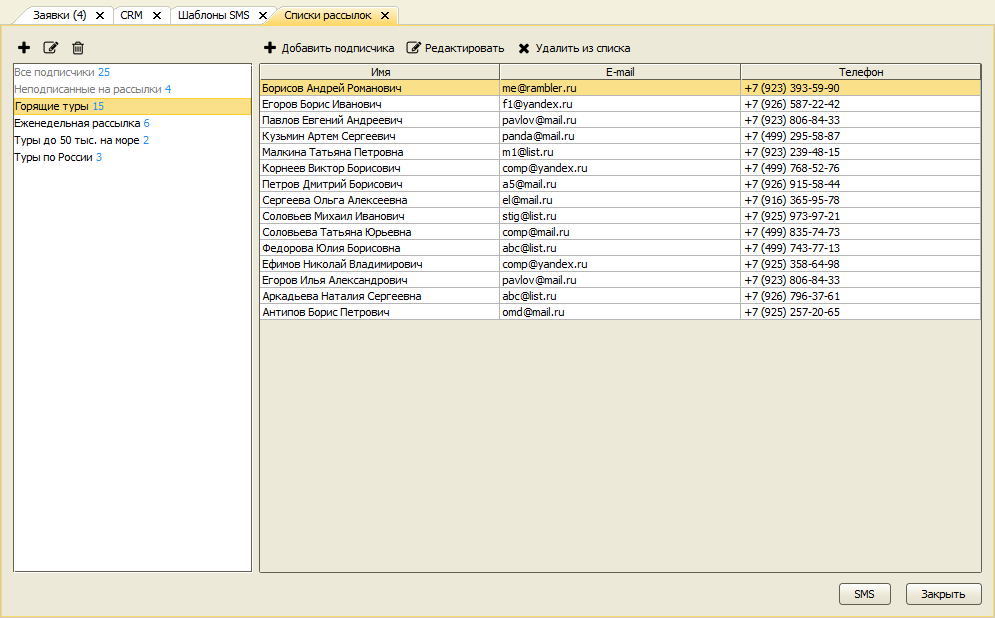
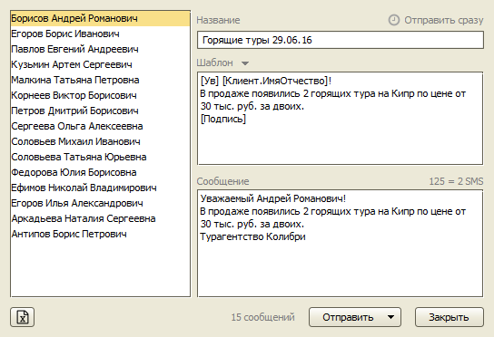
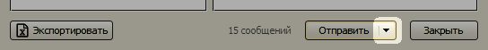
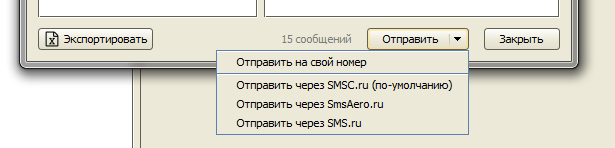

Отправка SMS-сообщений
Программа позволяет отправлять клиентам различные типы SMS-сообщений. В зависимости от контекста это могут быть поздравление с Днем рождения, напоминания о сроке оплаты, рассылка о "горящих" турах и т.д.
Программа отправляет SMS-сообщения через SMS-шлюз. Стоимость отправки SMS-сообщений определяется SMS-шлюзом. Отправка производится по безопасным каналам с гарантированной доставкой. В настоящий момент поддерживаются следующие SMS-шлюзы:
Шаблоны SMS-сообщений
Для формирования SMS-сообщения могут использоваться предопределенные шаблоны. Шаблон представляет собой текст, в котором, с помощью тегов и сегментов (как в шаблонах документов), указываются части текста, которые будут заменены значениями данных клиента и/или заявки. Например, во всех SMS-шаблонах может использоваться тег [Клиент.ИмяОтчество], который при формировании SMS-сообщения из шаблона будет заменен фамилией и именем клиента, которому отправляется сообщение.
Шаблоны может добавлять и редактировать Администратор программы с помощью формы "Шаблоны SMS", находящейся в меню "Настройки".
Каждый шаблон определен в одном из двух контекстов (Клиент или Заявка) и имеет один из следующих типов:
- Напоминание,
- Информационное сообщение,
- Поздравление,
- Рассылка.
Контекст "Заявка" означает, что данный шаблон может использоваться только для SMS-сообщений, связанных с конкретной заявкой. В контексте "Заявка" доступны дополнительные теги для вывода информации о заявке.
Шаблоны с типом "Рассылка" используется при создании рассылки для клиентов из Списка рассылки.

В первой колонке расположен фильтр по типу и контексту шаблонов. Во второй колонке - список шаблонов. В правой части - область редактирования шаблона и предпросмотра. Список тегов для использования в шаблонах расположен под областью редактирования. При нажатии на кнопку тега он добавляется в поле редактирования.
В шаблоне сообщения можно использовать специальный тег [Подпись]. При формировании сообщения он будет заменяться текстом, определяемом специальным шаблоном Подпись. Редактируется этот шаблон с помощью формы, открываемой по кнопке Подпись.

В тексте шаблона Подпись могут использоваться любые теги для SMS-шаблонов.

Как и в шаблонах печатных форм, возможности системы не ограничены лишь простой подстановкой значений на месте тегов. Можно использовать операторы, функции внутри квадратных скобок и фрагменты.
Примеры использования операторов:
Оператор +
Оператор + соединяет 2 строки. Например:
["Дополнительная информация будет отправлена на " + Клиент.Email]
Здесь мы соединяем строку и значение тега Клиент.Email.
Если в карточке клиента, которому мы отправляем SMS указан e-mail ivanov@mail.ru, то данное выражение будет преобразовано в строку:
Дополнительная информация будет отправлена на ivanov@mail.ru
Оператор +?
Оператор +? соединяет 2 строки, если вторая строка не пустая. Когда это может понадобиться? В предыдущем примере в случае отсутствия e-mail в карточке клиента результатом будет строка:
Дополнительная информация будет отправлена на
Что выглядит не очень красиво. При использовании оператора +? вместо + в случае отсутствия e-mail выводится ничего не будет.
Оператор ?
Оператор проверки условия ? может использоваться, когда нужно производить вывод только при истинности выражения.
Например, тег [Клиент.ИмяОтчество] будет иметь непустое значение, состоящие из имени и отчества клиента, только если в карточке указано полное ФИО. Для клиента с полным именем "Иванов Петр Федорович" данный тег будет возвращать "Петр Федорович", а вот для "Иванов Петр" уже будет пустая строка.
Если мы начинаем наше сообщение:
Ув. [Клиент.ИмяОтчество]!
В случае клиента с ФИО "Иванов Петр" будет выведено:
Ув. !
Воспользуемся оператором ?:
[Клиент.ИмяОтчество ? "Ув. " + Клиент.ИмяОтчество : "Уважаемый клиент!"]
Проверяем возможность обращения по имени-отчеству, и в случае отсутствия полного ФИО выводит строку "Уважаемый клиент!".
Фрагменты
Фрагменты позволяют выводить текст в зависимости от выполнения условия.
Фрагмент начинается символами <<, затем следует символ ? или !, определяющий тип фрагмента, внутри фигурных скобок указывается условие, при выполнения которого содержимое фрагмента будет выведено (для типа фрагмента ?) или не выведено (для типа !). Далее идет содержательная часть, в которой можно использовать теги, определенные в контексте использования шаблона. Заканчивается фрагмент символами >>.
Тип фрагмента задается одним из символов: ? и !
- ? - содержимое фрагмента вычисляется и выводится только при выполнении условия в фигурных скобках,
- ! - содержимое фрагмента выводится, наоборот, только если условие не выполнено.
Например, если мы хотим начать SMS с обращения к клиенту по имени-отчеству, можно использовать следующий фрагмент:
<<?{Клиент.ИмяОтчество}[Ув] [Клиент.ИмяОтчество]!>>
Проверяем, что для клиента указано имя и отчество (условие фрагмента ?{Клиент.ИмяОтчество}), и формируем строку с обращением (содержание фрагмента [Ув] [Клиент.ИмяОтчество]!). Если имя и отчество не указаны в карточке клиента, то в итоговом SMS обращение вставлено не будет.
Настройка подключения к SMS-шлюзу
Для того чтобы отправлять SMS из программы необходимо зарегистрироваться на сайте SMS-шлюза и ввести регистрационные данные в Настройках SMS программы (меню "Настройки", пункт "Настройки SMS").
Вы можете добавить собственное Имя отправителя (Sender ID) в Личном кабинете на сайте SMS-шлюза. Пока Имя отправителя не подтверждено, поле "Sender ID" в настройках шлюза оставьте пустым.
SMS.ru
Зарегистрируйтесь на сайте шлюза SMS.ru по этой ссылке.
В настройках SMS-шлюза программы укажите ключ API, который можно сгенерировать в Личном кабинете. Запрос Имени отправителя осуществляется на этой странице.

SMSС.ru
Зарегистрируйтесь на сайте шлюза SMSC.ru по этой ссылке.
В настройках SMS-шлюза программы укажите Логин и Пароль от Личного кабинета сайта SMS-центр. Добавить Имя отправителя можно на этой странице Личного кабинета.

SMSAero.ru
В настройках SMS-шлюза программы укажите e-mail адрес, использовавшийся для регистрации на сервисе SMSAero.ru, и ключ API, который можно сгенерировать в Личном кабинете. Запросить Имя отправителя можно на этой странице Личного кабинета.

Отправка SMS по списку рассылки
Для отправки SMS по списку рассылки откройте справочник "Список рассылки", выберите нужный список рассылки и нажмите кнопку SMS.

Откроется форма для составления сообщения. Можно использовать один из шаблонов типа "Рассылка" или составить новое сообщение, используя теги.

Кнопка "Отправить" имеет дополнительное меню.

Можно протестировать сообщение, отправив его себе на телефон. Затем отправить сообщение всем адресатам через один из настроенных шлюзов.

Остались вопросы? Напишите нам на e-mail